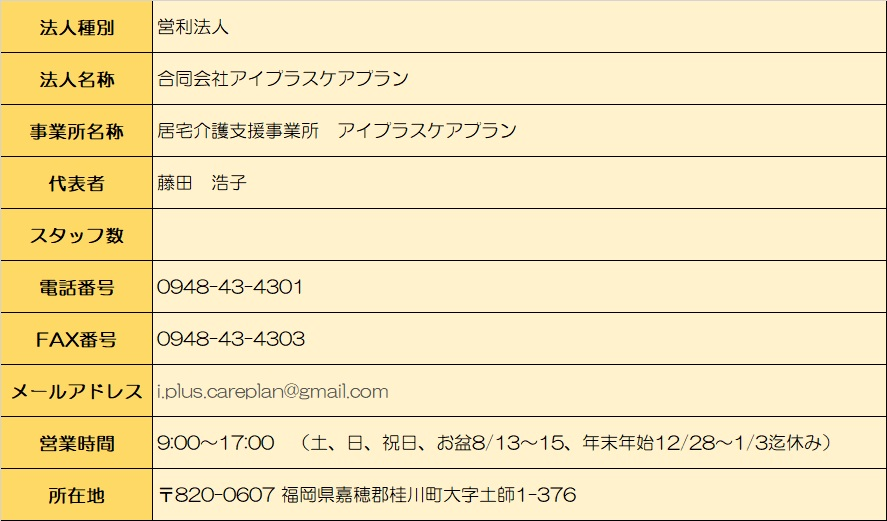

【法人概要】

居宅介護支援事業所アイプラスケアプラン運営規程
（居宅介護支援事業の運営規程）
（事業の目的）
第１条 当運営規程は、居宅介護支援事業所アイプラスケアプランが設置する（以下「事業所」という。）において実施する指定居宅介護支援事業（以下「事業」という。）の適正な運営を確保するために必要な人員及び管理運営に関する事項を定め、もって事業所の介護支援専門員が、要介護者等からの相談に応じ、及び要介護者がその心身の状況や置かれている環境等に応じて、本人やその家族の意向等を基に居宅サービス又は施設サービスを適切に利用できるようサービスの種類内容等の計画を作成するとともに、サービスの提供が確保されるよう指定居宅サービス事業者、介護保険施設等との連絡調整その他の便宜の提供を行うことを目的とする。
（運営の方針）
第２条 事業所が実施する事業は、利用者が要介護状態となった場合においても、利用者が可能な限りその居宅において、その有する能力に応じ自立した日常生活を営むことができるように配慮したものとする。
（1）利用者の心身の状況、その置かれている環境等に応じて、利用者自らの選択に基づき適切な保健医療サービス及び福祉サービスが、多様な事業者から総合的かつ効率的に提供されるよう配慮して行う。
（2）利用者の意思及び人格を尊重し、常に利用者の立場に立って、利用者に提供される居宅サービス等が特定の種類または特定の居宅サービス事業者に不当に偏することのないよう、公正中立に行う。
（3）事業を行うにあたっては、利用者の所在する市町村、在宅介護支援センター、地域包括支援センター、他の居宅介護支援事業者、介護保険施設等との連携に努める。
（4）事業所は、利用者の人権の擁護、虐待の防止等のため、必要な体制の整備を行うとともに、研修を実施する等の措置を講じる。
（5）事業所は、指定居宅介護支援を提供するに当たっては、介護保険法第118条の2第1項に規定する介護保険等関連情報その他必要な情報を活用し、適切かつ有効に行うよう努める。
（運営の方針）
第２条 事業所が実施する事業は、利用者が要介護状態となった場合においても、利用者が可能な限りその居宅において、その有する能力に応じ自立した日常生活を営むことができるように配慮したものとする。
（1）利用者の心身の状況、その置かれている環境等に応じて、利用者自らの選択に基づき適切な保健医療サービス及び福祉サービスが、多様な事業者から総合的かつ効率的に提供されるよう配慮して行う。
（2）利用者の意思及び人格を尊重し、常に利用者の立場に立って、利用者に提供される居宅サービス等が特定の種類または特定の居宅サービス事業者に不当に偏することのないよう、公正中立に行う。
（3）事業を行うにあたっては、利用者の所在する市町村、在宅介護支援センター、地域包括支援センター、他の居宅介護支援事業者、介護保険施設等との連携に努める。
（4）事業所は、利用者の人権の擁護、虐待の防止等のため、必要な体制の整備を行うとともに、研修を実施する等の措置を講じる。
（5）事業所は、指定居宅介護支援を提供するに当たっては、介護保険法第118条の2第1項に規定する介護保険等関連情報その他必要な情報を活用し、適切かつ有効に行うよう努める。
（事業の運営）
第３条 事業所は、事業の実施に当たり、暴力団員による不当な行為の防止等に関する法律(福岡県暴力団排除条例)に規定する暴力団密接関係者を、その運営に関与させないものとする。
（事業所の名称及び所在地）
第４条 事業を行う事業所の名称及び所在地は、次のとおりとする。
(１)名 称 居宅介護支援事業所アイプラスケアプラン
(２)所在地 福岡県嘉穂郡桂川町大字土師1-376
（従業者の職種、員数及び職務の内容）
第５条 事業所における従業者の職種、員数及び職務の内容は次のとおりとする。
（１）管理者 １名（介護支援専門員との兼務）に
事業所における介護支援専門員、指定居宅介護支援の利用の申込みに係る調整、業務の実施状況の把握その他業務管理を一元的に行うとともに、法令等において規定されている指定居宅介護支援事業の実施に関し、遵守すべき事項についての職務を行う。
（２）介護支援専門員 1名（常勤で管理者と兼務）
要介護者等からの相談に応じ、及び要介護者等がその心身の状況や置かれている環境等に応じて、本人やその家族の意向等を基に、居宅サービス又は施設サービスを適切に利用できるよう、サービスの種類内容等の計画を作成するとともに、サービスの提供が確保されるよう指定居宅サービス事業者、介護保険施設等との連絡調整その他の便宜の提供を行う。
（営業日、営業時間等）
第６条 事業所の営業日、営業時間等は、次のとおりとする。
（１）営業日 月曜日から金曜日までとする。
ただし、土曜日、日曜日、祝日、8月13日から8月15日、12月28日～1月3日までを除く。
（２）営業時間 午前9時から午後5時までとする。
（３）上記の営業日、営業時間のほか、電話等により２４時間常時連絡が可能な体制とする。
（指定居宅介護支援の提供方法及び内容）
第７条「福岡県介護保険広域連合指定居宅介護支援等の事業の人員及び運営の基準等に関する条例」に定める取扱方針を遵守するものとし、指定居宅介護支援の提供方法及び内容は次のとおりとする。
1. 利用者からの居宅サービス計画作成依頼等に対する相談対応
相談者自宅、当事業所内相談室において行う。
２. 課題分析の実施
（１）課題分析の実施にあたっては、利用者の居宅を訪問し、利用者及びその家族に面接して行うものとする。
（２）課題分析の実施にあたっては、利用者の生活全般についての状態を十分把握し、利用者が自立した生活を営むことができるよう支援するうえで、解決すべき課題を把握するものとする。
（３）使用する課題分析票の種類は課題整理総括表方式とする。
３. 居宅サービス計画原案の作成
利用者及びその家族の希望並びに利用者について把握された解決すべき課題に基づき、提供されるサービスの目標及びその達成時期、サービスを利用するうえでの留意点等を盛り込んだ居宅サービス計画の原案を作成する。
４. サービス担当者会議等の実施
居宅サービス計画原案に位置づけた指定居宅サービス等の担当者を招集したサービス担当者会議の開催、テレビ電話装置その他の情報通信機器を活用しおこなう事ができるが、利用者又はその家族が参加する場合にあっては、テレビ電話装置等の活用について当該利用者の同意を得なければならない。担当者に対する照会等により、居宅サービス計画原案の内容について、担当者から専門的見地からの意見を求めるものとする。
５. 居宅サービス計画の確定
介護支援専門員は、居宅サービス計画に位置付けた指定居宅サービス等について、保険給付の対象となるか否かを区分したうえで、その種類、内容、利用料等について利用者又はその家族に対して説明し、文書により利用者の同意を得るものとする。
6. 居宅介護支援事業所とサービス事業所の連携
介護支援専門員は、居宅サービスに位置づけた指定居宅サービス事業者等に対して、個別サービス計画の提出を求めるものとする。
7. サービス実施状況の継続的な把握及び評価
居宅サービス計画の作成後においても、利用者及びその家族、指定居宅サービス事業者等との連絡を継続的に行うことにより、居宅サービス計画の実施状況や利用者についての解決すべき課題についての把握を行い、必要に応じて居宅サービス計画の変更、指定居宅サービス事業者等との連絡調整その他の便宜の提供を行うものとする。
8. 地域ケア会議における関係者間の情報共有
地域ケア会議において、個別のケアマネジメント事例の提供の求めがあった場合には、これに協力するよう努めることとする。
（指定居宅介護支援の利用料等）
第８条 居宅介護支援の利用料その他の費用の額は次のとおりとする。
１. 法定代理受領以外の利用料は、厚生労働大臣が定める基準（告示上の報酬額）によるものとする。
２. 提供した指定居宅介護支援について法定代理受領以外の利用料の支払を受けた場合、領収書及び指定居宅介護支援提供証明書を交付する。
３. 次条に定める通常の事業の実施地域を越えて行う事業に要する交通費は、その実費を徴収する。なお、自動車を使用した場合の交通費は、次の額を徴収する。
（１）実施地域以外からから片道おおむね1キロメートル以上 1キロにつき20円
（通常の事業の実施地域）
第９条 通常の事業の実施地域は、桂川町、飯塚市、嘉麻市の区域とする。
（事故発生時の対応）
第１０条 事業所は、利用者に対する指定居宅介護支援の提供により事故が発生した場合には速やかに市町村、利用者の家族等に連絡を行うとともに、必要な措置を講じるものとする。
1. 前項の事故の状況及び事故に際して採った処置について記録を行うものとする。
2. 利用者に対する指定居宅介護支援の提供により賠償すべき事故が発生した場合は、損害賠償を速やかに行うものとする。
（苦情処理）
第１１条 指定居宅介護支援の提供に係る利用者からの苦情に迅速かつ適切に対応するために必要な措置を講じるものとする。
1. 事業所は、提供した指定居宅介護支援に関し、介護保険法第２３条の規定により市町村が行う文書その他の物件の提出若しくは提示の求め又は当該市町村の職員からの質問若しくは照会に応じ、及び市町村が行う調査に協力するとともに、市町村から指導又は助言を受けた場合は、当該指導又は助言に従って必要な改善を行うものとする。
2. 事業所は、提供した指定居宅介護支援に係る利用者からの苦情に関して国民健康保険団体連合会が行う調査に協力するとともに、国民健康保険団体連合会から指導又は助言を受けた場合は、当該指導又は助言に従って必要な改善を行うものとする。
（個人情報の保護）
第１２条 事業所は、利用者の個人情報について「個人情報の保護に関する法律」、「個人情報の保護に関する法律についてのガイドライン」及び「医療・介護関係事業者における個人情報の適切な取り扱いのためのガイダンス」を遵守し適切な取り扱いに努めるものとする。
1. 事業者が得た利用者の個人情報については、事業者での介護サービスの提供以外の目的では原則的に利用しないものとし、外部への情報提供については必要に応じて利用者又はその代理人の了解を得るものとする。
（虐待防止に関する事項）
第１３条 事業所は、利用者の人権の擁護・虐待等の防止のため次の措置を講ずるものとする。
（１）虐待を防止するための従業者に対する研修の実施
（２）利用者及びその家族からの苦情処理体制の整備
（３）その他虐待防止のために必要な措置
2. 事業所は、サービス提供中に、当該事業所従業者又は養護者（利用者の家族等高齢者を現に養護する者）による虐待を受けたと思われる利用者を発見した場合は、速やかに、これを市町村に通報するものとする。
（業務継続計画の策定等）
第１４条 事業所は、感染症や非常災害の発生時において、利用者に対する指定居宅介護支援も提供を継続的に実施するための、及び非常時の体制で業務再開を図るための計画（以下「業務継続計画」という。）を策定し、当該業務継続計画に従い必要な措置を講ずるものとする。
1. 事業所は、職員の質的向上を図るために研修の機会を次のとおり設けるものとする。
継続研修 年12回
2. 事業所は、定期的に業務継続計画の見直しを行い、必要に応じて業務継続計画の変更を行うものとする。
（衛生管理等）
第15条 事業所は、事業所において感染症が発生し、又はまん延しないように、次の各号に掲げる措置を講ずるものとする。
1. 事業所における感染症の予防及びまん延の防止のために対策を検討する委員会を開催するとともに、その対策について、介護支援専門員に周知徹底を図る。
2. 事業所における感染症の予防及びまん延のための指針を整備する。
3.事業所において、介護お支援専門員に対し、感染症の予防及びまん延の防止のための研修及び訓練を定期的に実施する。
（その他運営に関する重要事項）
第16条 事業所は、居宅介護支援の質の評価を行い、常にその改善を図ることとし、業務の執務体制についても検証、整備する。
(1) 事業所は、資質向上を図るために研修の機会を次のとおり設けるものとする。
(2) 職員であった者に、業務上知り得た利用者又はその家族の秘密を保持させるため、職員でなくなった後においてもこれらの秘密を保持すべき旨を、従業者との雇用契約の内容とする。
(3) 事業所は、指定居宅介護支援の提供に関する諸記録を整備し、次に掲げる起算日から５年間保存するものとする。
2. 居宅サービス計画については当該居宅介護支援に係る契約が終了した日
(1) 指定居宅サービス事業者等との連絡調整に関する記録、アセスメントの結果の記録、サービス担当者会議等の記録、モニタリングの結果の記録、苦情の内容の記録、事故の状況及び事故に際して採った処置についての記録については当該サービスを提供した日
(2) 市町村への通知に係る記録については当該通知の日
この規程は、令和6年4月1日から施行する。